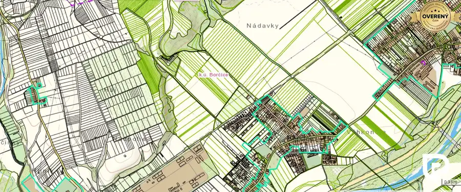
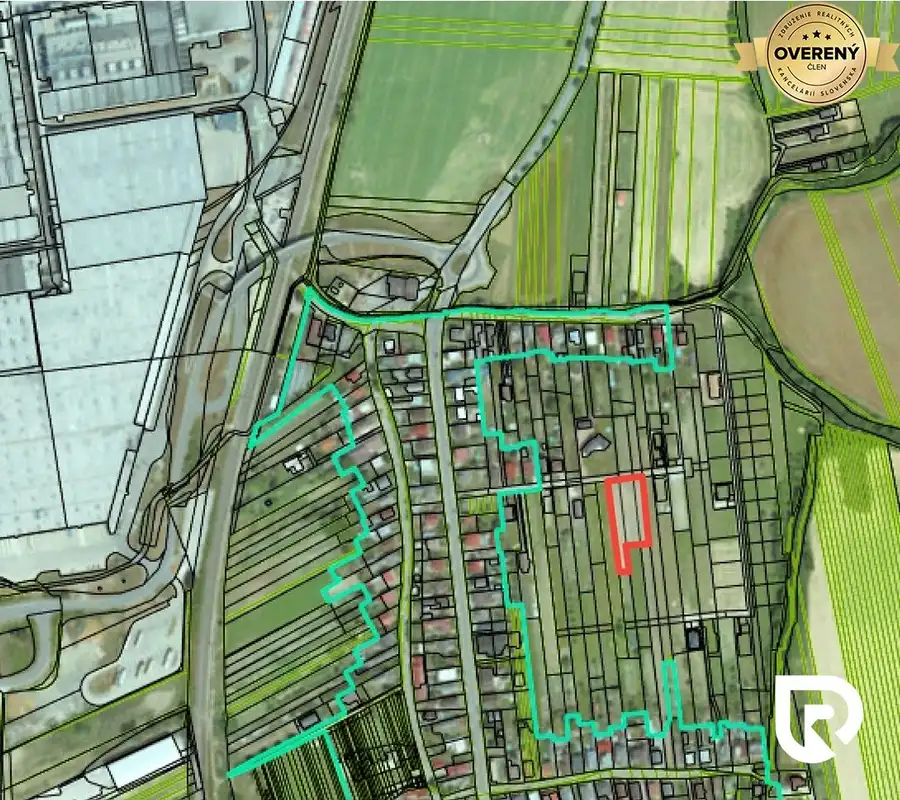
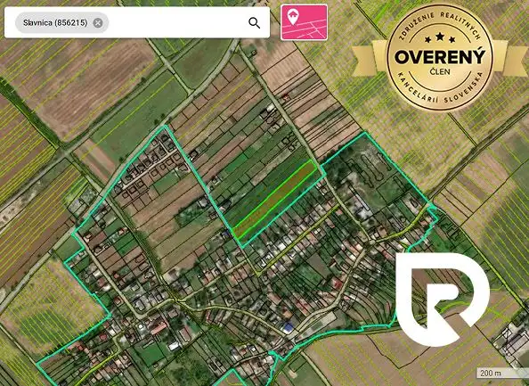

IBA U NÁS! Na predaj pozemok Lazy pod Makytou-osada Mladoňov
Lazy pod Makytou
- Plocha2657 m²
- Vlastníctvoosobné
O nehnuteľnosti
Predám pozemok o výmere 2657 m2 v krásnej prírode osady Mladoňov (Lazy pod Makytou).
° pozemok je svahovitý, podľa nového územného plánu určený na výstavbu,
° na pozemku je vyprataná drevenica so súpisným číslom 495 - jedna obvodová stena je mierne klesnutá, no pre šikovného človeka vhodná na rekonštrukciu,
° prístup bežným autom, pri pozemku je priamy prístup z miestnej asfaltovej komunikácie a kúsok spevnenej.
° pod pozemkom tečie potok, ktorý dotvára príjemnú atmosféru.
° osada Mladoňov (okres Púchov) v pohorí Javorníkov, ktoré sú súčasťou chránenej krajinnej oblasti Kysuce, okresné mesto Púchov je vzdialené 20 km.
V zime:
Lyžiarske stredisko Ski Čertov (výška 550-850 m n.m.) je vzdialené 6 minút autom. Stredisko je rozdelené do dvoch areálov. Nižšie položený areál Krivá ponúka dva lyžiarske vleky (dĺžka 300 a 137 m) a lanový vlek s modrými zjazdovkami pre začiatočníkov. Vyššie položený areál Lamže / Balúchovec ponúka sústavu dvoch lyžiarskych vlekov (dĺžka 600 a 950 m) so zjazdovkami pre stredne pokročilých a pokročilých lyžiarov. Jedna zo zjazdoviek-Lamže, je technicky zasnežovaná a ponúka aj večerné lyžovanie. V stredisku nájdu návštevníci bufet, požičovňu lyží a snowboardov, servis a lyžiarsku škôlku. V stredisku je nástupný bod na bežkárske trate Javorníckej magistrály. Lyžiarsky areál Skicentrum Kohútka (výška 715-913 m n.m.) je o 10 km ďalej (na slovensko-českej štátnej hranici), disponuje 4-sedadlovou lanovkou s dĺžkou 730 m a prevýšením 200 m, ktorú kapacitne dopĺňa 5 lyžiarskych vlekov a posuvný pás. Lanovka obsluhuje tri zjazdovky všetkých náročností – jednu čiernu, jednu červenú a jednu modrú. Celková dĺžka zjazdoviek je 6,6 km.
V lete:
Krásna okolitá príroda CHKO Kysuce ponúka turistiku, prechádzky, hubárčenie, cyklistiku
Celoročne:
ponuky hotelov a reštaurácií v oboch strediskách (wellness, bowling, plavecký bazén, sauna, mini zoo, tenis, lezecká stena, stolný tenis, krytá telocvičňa)
Bc. Martina Švecová
RADO Reality Group
Tel:
E-mail:
Uvedená cena je konečná a nenavyšuje sa o odmenu sprostredkovateľa, v cene je zahrnuté právne poradenstvo, vyhotovenie kúpnych zmlúv, hypotekárne poradenstvo a uhradenie správneho poplatku za návrh na vklad do katastra nehnuteľností.
Parametre
| Rozloha pozemku | 2657 m² |
|---|---|
| Poschodie | neuvedené |
| Vlastníctvo | osobné |
| Odvoz odpadu | nie |
| Voda | studňa |
| El. napätie | 230V |
| Plyn | nie |
| Kanalizácia | žumpa |
| Inžinierske siete | blízko |
| Káblová televízia | nie |
| Terén | svahovitý |
| Prístupová cesta | neupravená cesta |
| Pripravené na výstavbu | schválené v územnom pláne |
| Dátum zverejnenia | 20. 10. 2023 |
Kde to je
Mohlo by Vás zaujímať

Developerské projekty 375 000 €Investičný pozemok | Borčice 15 000 m2 Borčice 15000 m² V prípade záujmu o detailnejšie informácie alebo obhliadku nehnuteľnosti nás neváhajte kontaktovať: Bc. Martina Švecová RADO Reality Group Tel.:…
Pozemok 273 960 €RADO | Investičný stavebný pozemok Dolné Kočkovce Dolné Kočkovce 2283 m² RADO Reality ponúka na predaj slnečný, rovinatý pozemok s rozlohou 2283 m2 so všetkými inžinierskymi sieťami, nachádzajúci sa v novobudovanej ulici…
Pozemok 243 000 €Slavnica - investičný pozemok Slavnica 5400 m² IBA U NÁS !!! RADO Reality Vám ponúka na predaj pozemok v obci Slavnica, o rozlohe 5400 m2, vhodný ako investičný, elektika, obecný vodovod a…